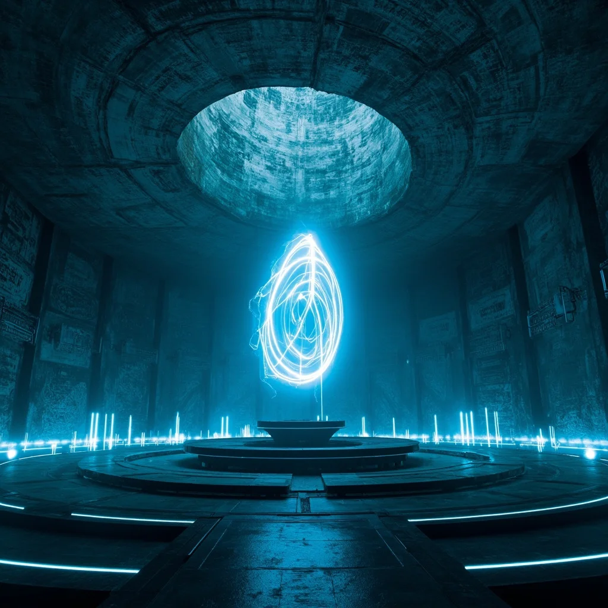
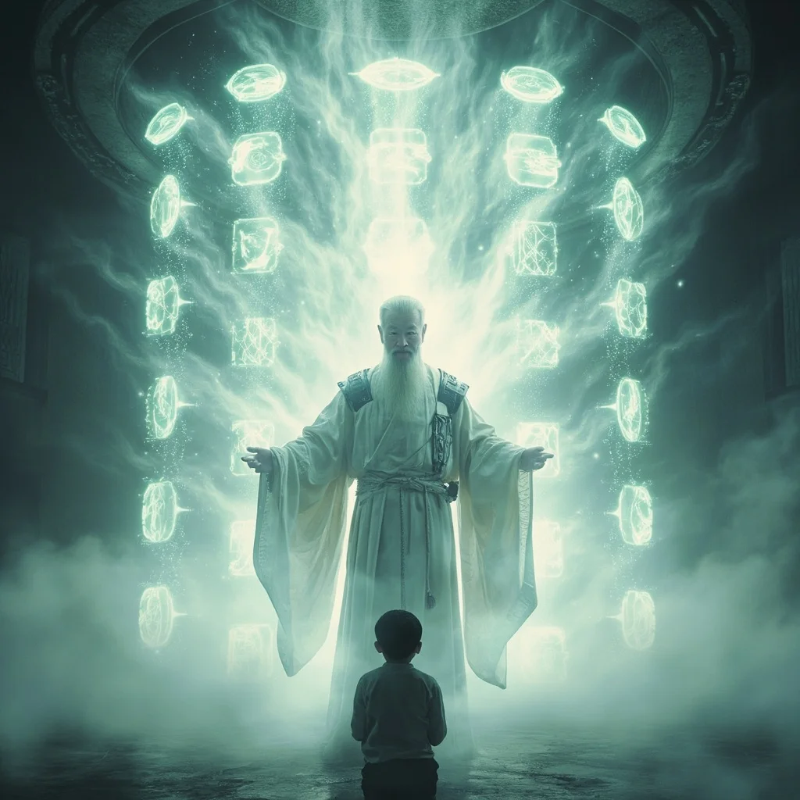
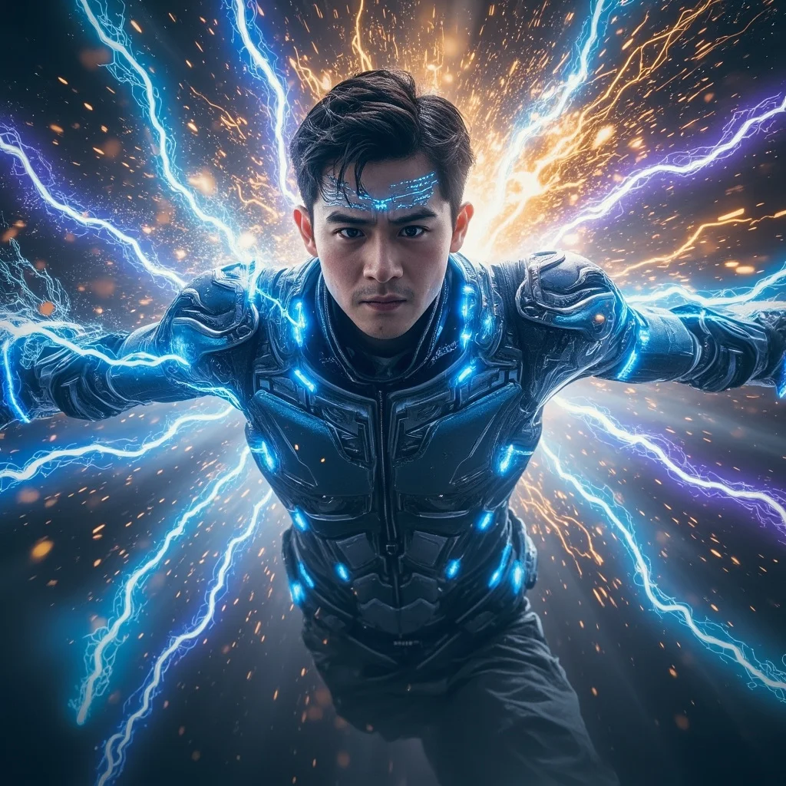
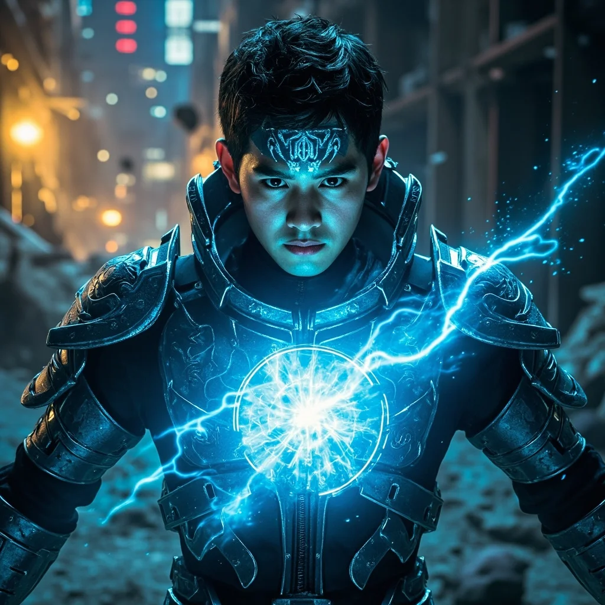

第72章：修真奇遇
🎧 點擊播放有聲朗讀
🎧 點擊播放有聲朗讀
林塵站在廢墟都市的邊緣，靈芯系統發出尖銳警告——檢測到異常靈氣波動，座標東南37度距離2.3公里。官方記錄中已廢棄六十年的「舊時代基因實驗室遺址」，此刻閃爍著淡金色光點——高濃度靈氣的特殊標記。林塵啟動隱匿模式，納米戰甲光學迷彩融入廢墟陰影，快速移動。

直徑百米的圓形大廳中央，懸浮著一顆拳頭大小的晶體，以複雜軌跡緩慢旋轉，釋放淡藍色靈氣波紋。牆壁上的符文一半是古修真文明靈紋，另一半竟是量子電路設計圖。掃描顯示這是「靈源晶核」，內部嵌入了科技造物，存在意識殘留。踏入中央符文圈時，晶核突然停止旋轉。

光影投射成白袍老者虛影——「雲霄子」也是「亞當·陳」，最後一位靈能科學家。十二根光柱升起，左側六件修真法器，右側六件科技造物。「真正的力量，不在於選擇哪一邊，而在於能否讓兩者共存。」晶核光芒大盛，十二件寶物同時飛向林塵。

修真法器化作靈氣洪流沖刷經脈，科技造物分解為數據流灌入靈芯系統。兩種截然不同的力量在體內碰撞、交融，每一秒都像被撕裂又重組。劇痛中，林塵的意識逐漸模糊——靈芯系統界面正在重構，修真功法與科技模組自動融合，生成全新技能樹分支。

林塵睜開眼睛時懸浮在半空中，納米戰甲完全變形，表面浮現流動符文。系統重構完成，解鎖「太虛靈芯1.0」——融合技能：靈子編程、量子御劍、納米符籙。他能「看到」靈氣的數據結構，也能「感覺」電子流動的能量紋路。加密信號傳來：「其他繼承者已覺醒，戰爭倒計時開始。」